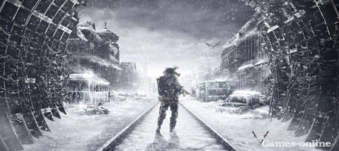
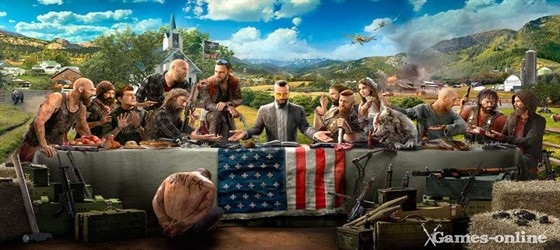
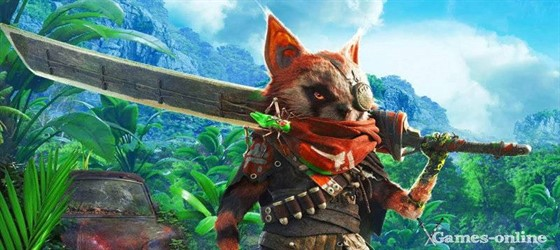

В Metro Exodus продовжаться пригоди Артема і групи, що вижили. Вони прагнуть знайти новий притулок для людей - і для цього їм належить проїхати майже через всю постапокаліптичну Росію.
Головне нововведення - відкритий світ, розділений на кілька локацій. Гравці тепер зможуть досліджувати місцевість і шукати різні артефакти. Суть ігрового процесу залишилася колишньою - потрібно битися з монстрами і бандитами, використовуючи багатий арсенал зброї. Заявлено про динамічної зміни дня і ночі, погоди і пори року. Дата виходу - осінь 2018.
Новини

Far Cry 5 - нова частина популярної серії, дія якої розгортається на північному заході США. У центрі сюжету - релігійна група «Врата Едему», тероризує місцеве населення. В якості головного героя представлений мандрівник, якому належить очистити округ Хоуп від фанатиків.
Море зброї, редактор персонажів, система прокачування, полювання та риболовля, новий харизматичний лиходій - далеко не всі переваги Far Cry 5. Подорож в Америку розпочнеться 27 березня 2018 року.
Новини

Biomutant розповість про постапокаліптичному світі. Гравець управляє єнотом, озброєним до зубів. Цей миле на перший погляд істота може змінювати зовнішній вигляд за рахунок мутацій, освоювати паранормальні здібності (левітація, телекінез) і продемонструвати прийоми різних бойових стилів.
У сукупності з зачаровують пейзажами зруйнованого світу виглядає все це інтригуюче. У Biomutant є всі шанси стати відмінною анімаційної грою. Здійсниться це чи ні - дізнаємося протягом цього року.
Новини